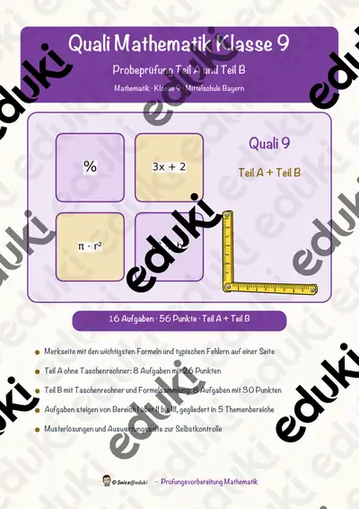
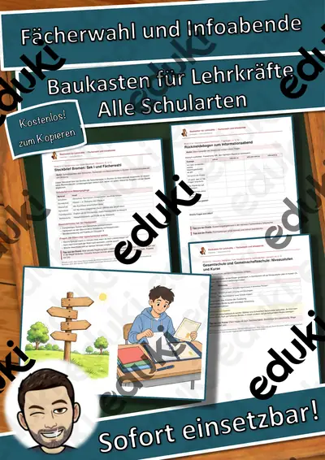

Stundenplan Bayern (Grundschule, Mittelschule, Realschule) - Stundentransparenz
Stundentransparenz Stundenplan Bayern: Mit diesem Material erhalten Sie zu den drei Schularten (Grundschule, Mittelschule und Realschule in Bayern) alle aktuellen Unterrichtsfächer als Stundenplan zur Klassenzimmergestaltung bis zur 8. Klasse.
Auf Nachfrage (in den Kommentaren) erstelle ich gerne noch Sonderwünsche.
Viel Spaß mit dem Material :)
FachFachübergreifendes
KlasseKl. 2–6
SchulformGrundschule
MaterialartFördermaterial/Inklusion, Poster, Präsentationen/Tafelbilder, Bildkarten
Ähnliche Materialien

Pläne & Listen zum Ausmalen – Wochenplan, Stundenplan, Ämterplan Kl. 1–4

Quali Mathematik 9 Probeprüfung Teil A und B mit Lösungen, Mittelschule Bayern

Bemaßung nach Norm – Technisches Zeichnen Klasse 8/9 Mittelschule – Arbeitsheft mit Lösungen

Escape Room Winter – Deutsch Klasse 5 für die Mittelschule: 6 Stationen, 2 Schlösser, 1 Zauberwort (GRATIS)

Fächerwahl und Infoabende an allen Schularten: Baukasten für Lehrkräfte – kostenlos

Oster-Ausmalbilder, Ausmalbilder für Ostern - Klassenzimmergestaltung

Sprechstunde - Christentum - Lass uns reden